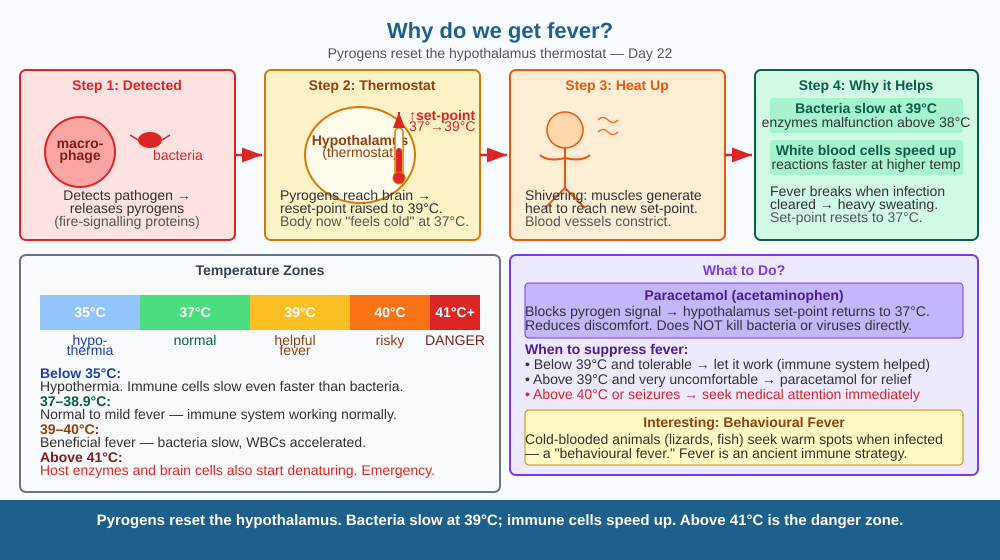

Discover why your body deliberately heats itself up when you're sick — and why fever is usually your immune system working, not failing.
You have a cold. Your temperature goes from the normal 37°C to 39°C. You feel terrible. Your mother says "break the fever." But why does a healthy body make itself hotter when it is already fighting something? What is the point of feeling so awful?
Fever is a deliberate, controlled response orchestrated by your immune system — not an accident. Here is the sequence:
Pathogen detected. When your immune cells (macrophages, monocytes) detect bacteria or viruses, they release signalling proteins called pyrogens (Greek: pyr = fire).
Hypothalamus resets the thermostat. Pyrogens travel to the hypothalamus — the part of the brain that controls body temperature. The hypothalamus raises the body's set-point from 37°C to, say, 39°C.
Body heats up. To reach the new set-point, you shiver (muscle contractions generate heat), blood vessels near the skin constrict (reduce heat loss), and you feel cold even though you are getting hotter.
Why fever helps:
Proteins that viruses need (replication enzymes) are more likely to malfunction at elevated temperatures.
Fever breaks. Once the infection is cleared, the hypothalamus resets back to 37°C. The body now sweats heavily to cool down — which is why a "broken" fever soaks your clothes.
Imagine a city attacked by thieves (bacteria). The mayor (hypothalamus) turns up the city's heating — it's uncomfortable for residents but the thieves are cold-blooded (their enzymes work poorly in heat) and they slow down. Meanwhile, the police (white blood cells) run faster in the warm. The discomfort is the cost of making the city a difficult environment for the thieves.

The diagram shows the fever pathway in four steps: (1) macrophage detects pathogen → releases pyrogens; (2) pyrogens reach hypothalamus → set-point rises; (3) body responses (shivering, vasoconstriction); (4) outcome — bacteria slow, white blood cells faster. A graph shows bacterial growth rate vs temperature: bacteria grow fastest at 37°C, grow more slowly at 39°C, and enzyme denaturation begins above 41°C (danger zone for host).
Check your temperature with a digital thermometer now — you should be close to 37°C (37.2°C ± 0.5°C is normal). Note the time. Do 20 jumping jacks and measure again immediately. Does it rise? (It may rise slightly — exercise generates heat, but the hypothalamus should correct it quickly.) Check again 5 minutes after stopping exercise. This shows the hypothalamus actively maintaining the set-point through feedback control.
Some animals — fish, reptiles, frogs — are cold-blooded. When they get a bacterial infection, they behaviorally seek out warmer spots (basking in sunlight) to raise their own body temperature — a "behavioral fever." This suggests fever is an ancient immune strategy, predating warm-blooded animals by hundreds of millions of years. If you removed all the warm rocks from a lizard's enclosure while it was infected, what would you predict about its recovery compared to a lizard with access to warm spots?
What is the main biological reason the body produces a fever when infected?
Why is understanding the purpose of fever more useful than knowing that body temperature rises during illness?
If a patient's fever became dangerously high (above 41°C), what would you predict about the risk to the body?
A doctor sees two patients with bacterial throat infections. Patient A has a fever of 39.2°C and feels miserable but is otherwise healthy. Patient B has a fever of 40.8°C and is becoming confused. The doctor considers giving paracetamol to both, one, or neither. Using what you know about fever's purpose and risks, advise the doctor with a clear rationale. What would you suggest — and why?
Human body temperature of 37°C is not arbitrary. Scientists have calculated that at lower temperatures (say 35°C), dangerous fungi could infect us (most fungi cannot survive above 37°C). At higher temperatures (39°C constantly), we would need to eat so much food to generate that heat that it would be impractical. The 37°C set-point is precisely calibrated — warm enough to keep most fungal pathogens out, cool enough to be energetically affordable. Birds, with body temperatures of 40–42°C, have almost no fungal infections.
Fever is deliberate: pyrogens reset the hypothalamus set-point upward. Higher temperature slows bacteria and speeds up white blood cells. Up to 39°C it is helpful; above 41°C it becomes dangerous to host cells.